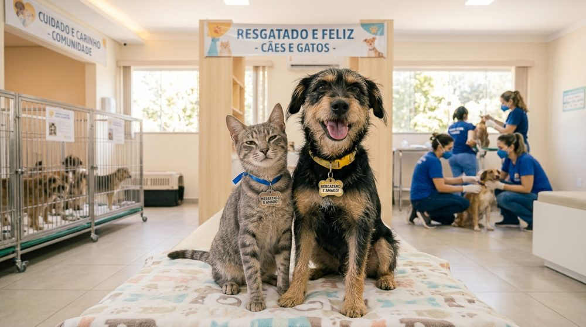

Transformando a vida de animais abandonados em nossa comunidade
A ONG Patinhas do Bem é uma instituição sem fins lucrativos dedicada ao resgate, à reabilitação médica e à busca de lares responsáveis para cães e gatos em situação de abandono e maus-tratos em nossa região.
Trabalhamos diariamente com apoio de voluntários e parceiros para oferecer alimentação, vacinação, castração e muito carinho para dezenas de animais que aguardam uma segunda chance.
